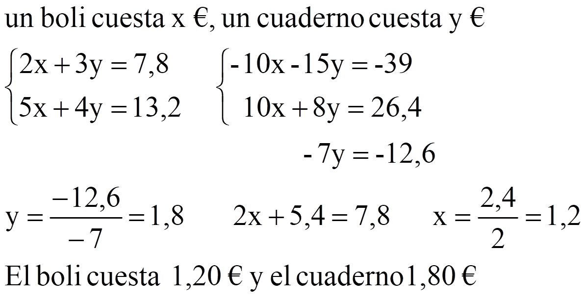
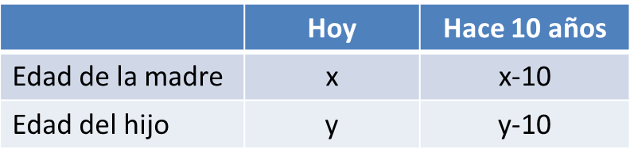
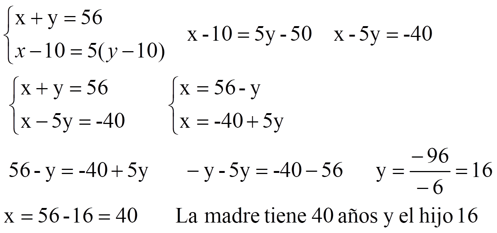

Problemas
1. He pagado 7,80€ por 2 bolis y 3 cuadernos. El otro día pagué 13,20€ por 5 bolis y 4 cuadernos. ¿Cuánto cuesta cada boli? ¿Y cada cuaderno?

2. La suma de las edades de una madre y su hijo es 56 años. Hace diez años, la edad de la madre era 5 veces la del hijo. ¿Qué edad tiene cada uno?


Ejercicios. Resuelve los siguientes problemas:
1.- Un librero vendió 45 libros la semana pasada algunos a 32 € y otros a €. Si recaudó 1368 €, ¿cuántos libros de cada clase vendió??
2.- Queremos mezclar aceite de oliva de 3.5 €/l con aceite de girasol de 2 €/l. Calcula cuántos litros de cada tipo debemos mezclar para obtener 50 l de mezcla a 3.08 €/l.
3.- Si restamos un número de dos cifras del número que resulta al intercambiar sus cifras, la diferencia es el doble que la cifra de las decenas del número inicial. Calcula el número sabiendo que sus cifras suman 16.
Soluciones: 1) 27 de 32 € y 18 de 28 €; 2) 36 l de aceite de oliva y 14 l de girasol; 3) 97
Obra publicada con Licencia Creative Commons Reconocimiento No comercial Compartir igual 4.0